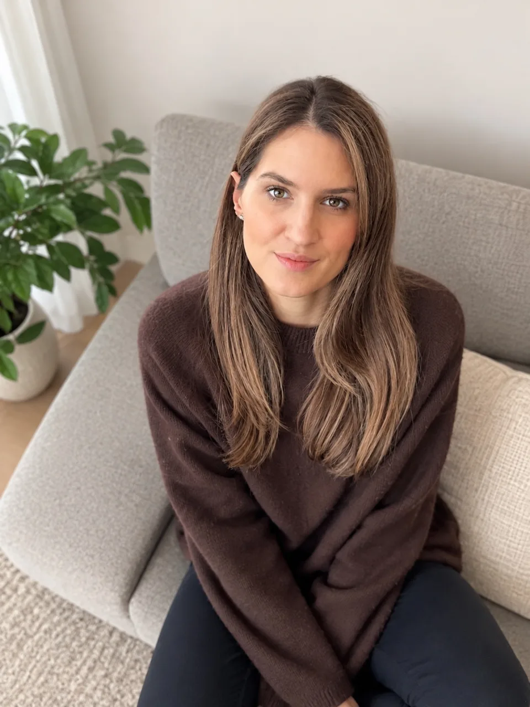
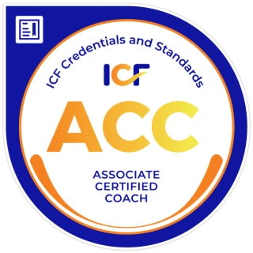
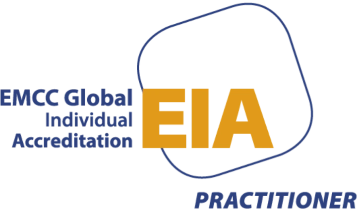

Pristnost
Verjamem, da ti ni treba postati drugačna različica sebe, da bi bila dovolj dobra. Pomembno mi je, da lahko raziskuješ, kdo si, brez potrebe po ugajanju ali dokazovanju.
Sem profesionalna coachinja z akreditacijama ICF ACC in EMCC EIA, magistra prava in mama dveh fantov. Rada imam dobre pogovore, iskrena vprašanja in ljudi, ki si upajo podvomiti v to, kar so dolgo imeli za samoumevno.
Dolgo sem verjela, da moram imeti stvari pod nadzorom. Da moram vedeti, kaj delam, kam grem in kako bom vse skupaj izpeljala. Pa še najbolje, da mi pri tem uspeva na vseh področjih življenja. :)
Danes na marsikaj gledam drugače. Ne verjamem, da moramo imeti življenje ves čas pod nadzorom, niti da obstaja ena prava pot, ki bi ji morali slediti.
Verjamem pa, da je vredno kdaj ustaviti avtomatski pilot in se vprašati, ali so odločitve, ki jih sprejemamo, še vedno naše.
In prav tak prostor želim ustvarjati tudi pri svojem delu.

Moja poklicna pot ni bila ravno zgodba o tem, kako sem že pri petih letih vedela, kaj želim postati. :)
Po študiju prava sem delala v različnih okoljih, prevzemala različne odgovornosti in se preizkusila tudi v podjetništvu. Veliko sem se naučila, a sem se ob tem vedno znova spraševala, kaj je tisto, kar si zares želim početi.
Potem sem postala mama. In čeprav sem mislila, da imam precej jasno predstavo o sebi in svojem življenju, se je marsikaj spremenilo. Moje prioritete, odnos do dela, pričakovanja do sebe in pogled na to, kaj zame sploh pomeni uspeh.
Na tej poti sem se srečala tudi z izgorelostjo. To ni bila edina prelomnica, je pa bila ena tistih izkušenj, ob katerih sem začela resneje razmišljati, kako želim živeti in delati.
Coaching sem najprej spoznala kot klientka. In presenetilo me je, koliko lahko odneseš iz pogovora, v katerem ti nihče ne deli nasvetov, ne odloča namesto tebe in te ne poskuša prepričati, kaj bi bilo zate najbolje.
Namesto tega dobiš prostor, da začneš drugače razmišljati, prepoznavati svoje vzorce in iskati odgovore, ki imajo smisel zate.
Ta izkušnja je pomembno vplivala na mojo odločitev, da se tudi sama podam na pot profesionalnega coachinga.
Danes pri svojem delu združujem strokovno znanje, različne življenjske in poklicne izkušnje ter predvsem iskreno radovednost do ljudi in njihovih zgodb.
Ni ti treba priti z jasnimi odgovori, popolno razlago svoje situacije ali načrtom, kaj želiš doseči. Lahko prideš tudi z mislimi, ki jih še sama težko ubesediš.
Kot coachinja sem radovedna, neposredna in iskrena. Rada poslušam tudi tisto, kar ostane neizrečeno, opazim besede, ki jih večkrat ponoviš, in postavim vprašanje, ob katerem se morda za trenutek ustaviš.
Ne bom ti vedno postavljala samo prijetnih vprašanj. Včasih bova pogledali tudi tja, kjer se pojavijo dvomi, nasprotja ali prepričanja, ki jih do zdaj morda nisi postavila pod vprašaj. Vedno pa v tempu in globini, ki ju želiš raziskovati sama.
Pri svojem delu mi je pomembno, da se počutiš slišano in spoštovano. Da lahko razmišljaš na glas, se ne strinjaš z mano, se nasmejiš ali preprosto nekaj časa ostaneš v tišini.
Ne verjamem, da obstaja ena prava pot za vse. Verjamem pa, da si zaslužiš prostor, v katerem lahko odkriješ svojo.
Način, kako delam, ni odvisen samo od mojega znanja in izkušenj. Pomembne so mi tudi vrednote, ki jih prinašam v vsak coaching odnos.
Verjamem, da ti ni treba postati drugačna različica sebe, da bi bila dovolj dobra. Pomembno mi je, da lahko raziskuješ, kdo si, brez potrebe po ugajanju ali dokazovanju.
Ne verjamem v eno pravo pot za vse. Spoštujem tvojo pravico, da sprejemaš lastne odločitve, tudi kadar so drugačne od mojih pogledov.
V coaching odnos vstopava kot partnerici. Ti si strokovnjakinja za svoje življenje, jaz pa prinašam coaching znanje, vprašanja in drugačne perspektive.
Pomembno mi je, da si lahko iskrena do sebe. Da si upaš pogledati tudi tisto, kar ni vedno prijetno, in raziskati vprašanja, ki jih je včasih lažje pustiti pri miru.
Profesionalni coaching zame pomeni tudi odgovornost do klientov. Zato vlagam v svoje znanje, razvijam coaching kompetence in pri delu sledim etičnim standardom ICF in EMCC.

Mednarodna akreditacija Associate Certified Coach organizacije International Coaching Federation.

Mednarodna individualna akreditacija za profesionalno coaching in mentorsko prakso organizacije EMCC Global.
Sem magistra prava z dodatnimi usposabljanji s področja coachinga, mediacije, NLP in komunikacije. Sem tudi članica Upravnega odbora ICF Slovenija in skupnosti Coachiefy, kjer ostajam povezana s strokovnim okoljem ter nadaljnjim razvojem coachinga.
O materinstvu, spremembah, pričakovanjih, odnosu do sebe in vseh tistih vprašanjih, ki se nam porajajo nekje med vsakdanjimi obveznostmi.
Na blogu delim svoja razmišljanja, izkušnje in drugačne poglede na stvari, ki jih pogosto jemljemo za samoumevne.
Preberi moje zapise